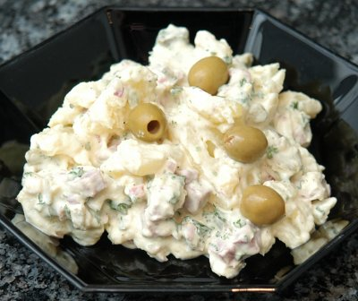

| Zutaten für 4 Personen: | |
| 1 kg | Kartoffeln |
| 1 Tube | Mayonnaise |
| 100 g | Quark |
| 2 El | Essig |
| 1 Tl | Senf |
| Streuwürze | |
| Salz | |
| Pfeffer | |
| 1 | Zwiebel |
| 1 Bund | Petersilie |
| 1 | Salzgurke |
| 100 g | fein geschnittenes kaltes Fleisch (z.B. Schinken, Zunge, kalter Braten) |
| schwarze Oliven | |
Die Kartoffeln im Dampfkochtopf 10 Minuten auf dem 2. Ring garen und auskühlen lassen.
In einer Schüssel Senf mit Essig verrühren, Mayonnaise und Quark dazu mischen, würzen.
Petersilie, Zwiebeln und Salzgurke fein schneiden und beigeben.
Die "Gschwellti" Kartoffeln schälen, in Scheiben schneiden und zugeben.
Fleisch in Würfelchen schneiden und sorgfältig mit der Sauce vermischen.
Mit Oliven garnieren. Wenn möglich etwas ziehen lassen.
Rezept auf einem Sack Kartoffeln
Auch ein ganz ausgezeichneter Kartoffelsalat. RE 6.12.2009